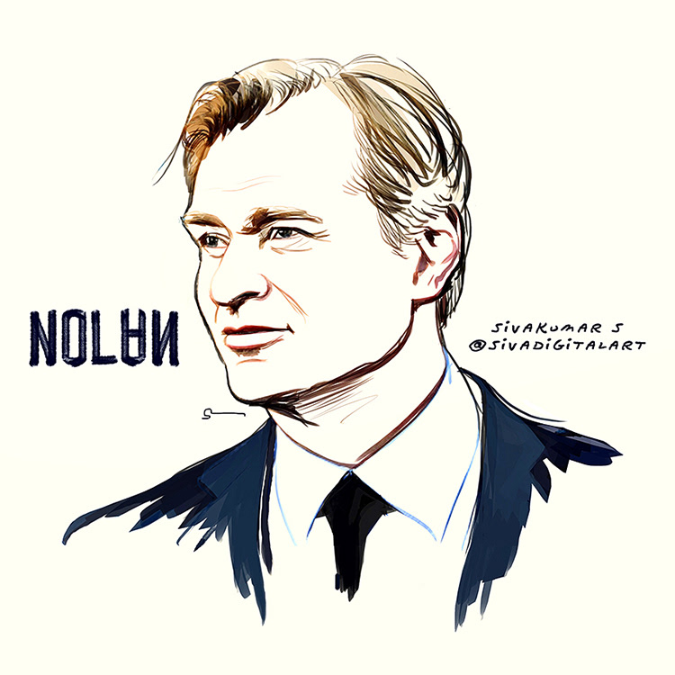

Best known for his cerebral, often nonlinear, storytelling,
acclaimed writer-director Christopher Nolan was born on July 30,
1970, in London, England. Over the course of 15 years of filmmaking,
Nolan has gone from low-budget independent films to working on some
of the biggest blockbusters ever made.
At 7 years old, Nolan began making short movies with his father's
Super-8 camera. While studying English Literature at University
College London, he shot 16-millimeter films at U.C.L.'s film
society, where he learned the guerrilla techniques he would later
use to make his first feature, Following (1998), on a budget of
around $6,000. The noir thriller was recognized at a number of
international film festivals prior to its theatrical release and
gained Nolan enough credibility that he was able to gather
substantial financing for his next film.
